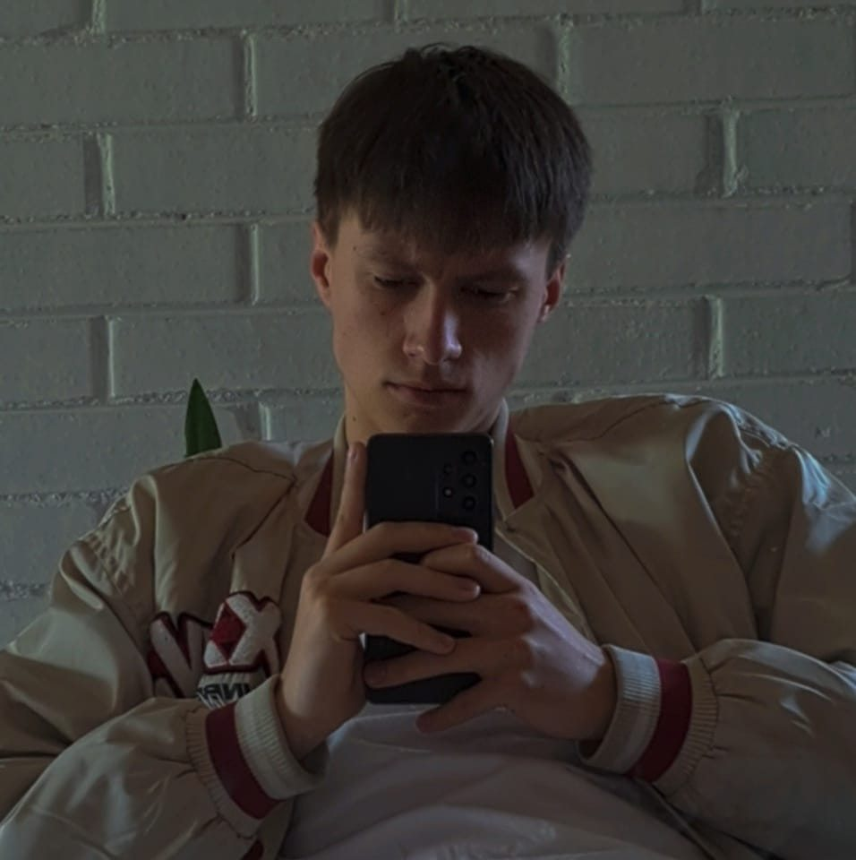

Apie mane
Aš esu Nedas Adulis, antrakursis Vilnius Tech elektronikos inžinerijos studentas. Tai yra mano asmeninis puslapis.
Peržiūrėti Portfolio

Elektronikos inžinerijos studentas
Šis puslapis skirtas mano laboratoriniams darbams HTML ir CSS mokymuisi.
- Gimimo data: 2004 m. rugpjūčio 7 d.
- Telefonas: +370 60468986
- Miestas: Vilnius, Lietuva
- El. paštas: nedas.adulis@stud.vilniustech.lt
- Amžius: 20
- Studijos: Bakalauro programa
- Laisvai samdomas: Taip
Mano tikslas – mokytis ir tobulėti, kuriant tinklalapius bei naudojant programavimo kalbas. Tikiuosi, kad mano svetainė paliks jums teigiamą įspūdį.